Reading aloud isn't available in this app. Open the guide in Chrome, Edge or Safari to listen.
Set up services
Services: the teams people can ask
Each card shows the service, its form type, its providers and who it escalates to. A red No provider assigned means its tickets have nobody to work on them. Fix that first.
Click + New service to add one, or Edit to change one.
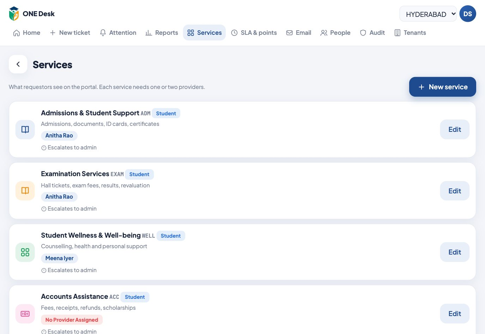
Create or edit a service
- Name, code (short, used in QR links, e.g.
MAINT) and an icon - Form type: what requestors are asked (see the table below)
- Blocks and Floors: one per line. Leave Blocks empty to let people type it.
- Service provider 1 and 2: who handles the tickets (both see the same queue)
- Escalation person: who gets the ticket if it misses its target. Empty means the admin.
| Form type | Requestors are asked |
|---|---|
| General | A simple location box |
| Location | Block · Floor · Location / room |
| Student | Branch · Student ID · Department (other people give their own ID instead) |
| Location & Student | Both |
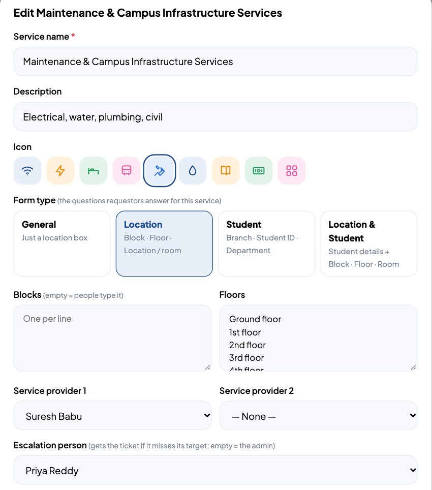
Add your own questions
Under Questions on the form, click Add a question. Type the question, choose the answer type (short answer, dropdown, date, yes/no…) and use ↑ ↓ to reorder. The preview shows exactly what requestors will see.
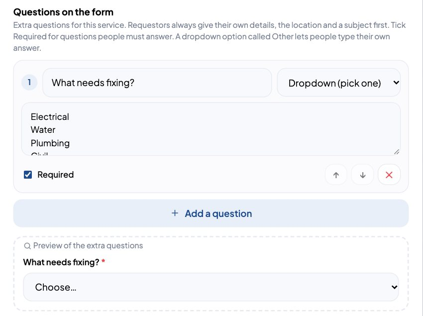
People and rules
People: staff accounts
- Edit: change name, email or phone
- Reset password: sends a new temporary password; they choose a new one at their next sign-in
- Deactivate: they can't sign in and are removed from their services; their history stays
Each row shows the person's role, services and last sign-in. Must set password means they haven't signed in yet.
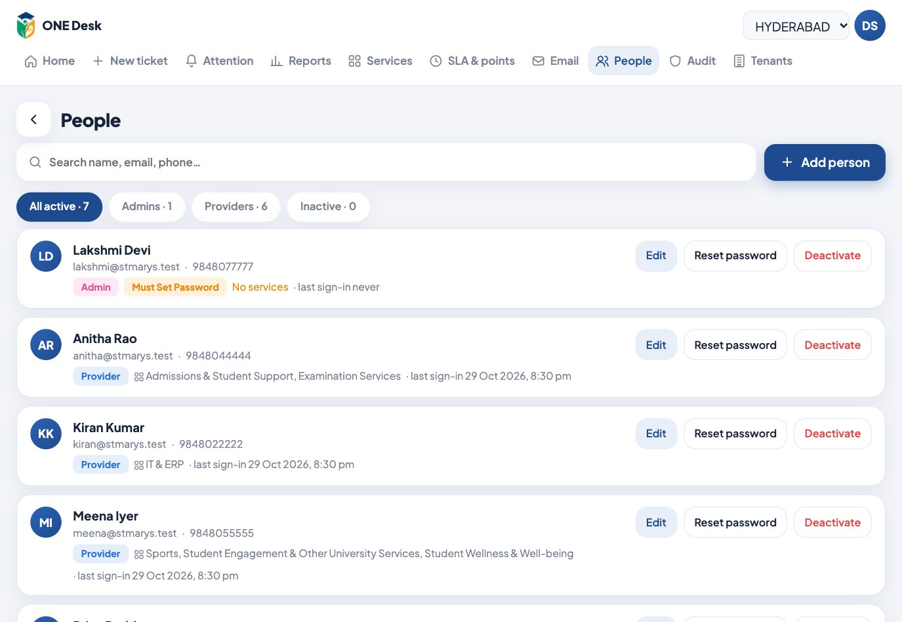
Add a person
Click Add person, enter their name, email and phone, choose the role, and tick the services they handle. A service that already has two providers shows as full.
They get a Welcome to ONE Desk email with their role, services, the sign-in link and a temporary password. The password also appears on screen with a Copy button. When they choose their own password, they get a Your password was changed email.
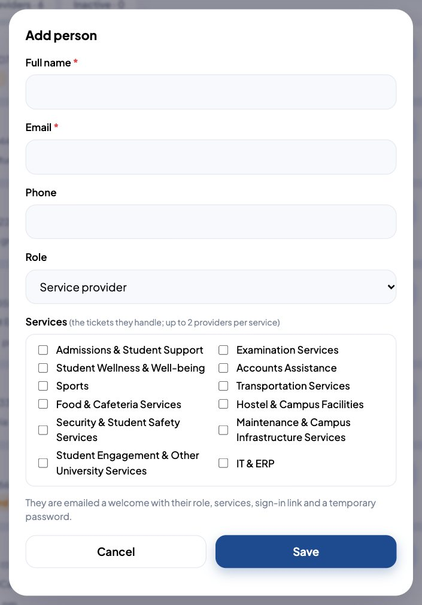
SLA & points: the time rules
- Working hours and working days: the clock only runs inside these
- Time to close per priority: Critical 3h, High 5h, Medium 8h, Low 24h (3 days)
- Escalation: how many working days past the target a ticket waits before it goes to the escalation person (0 = as soon as it's missed). The requestor is told when it happens.
- Daily ticket limit, per email: how many tickets one email can raise a day on the public form. Student 5, Faculty 9, Staff 5, Parent 5, Visitor 5. Past it, the person is told when they can raise the next one.
- Hold reasons: each with its own hold limit. Add your own (e.g. Waiting for exam cell, 4h).
Lower on the page: the points rules and the leaderboard.
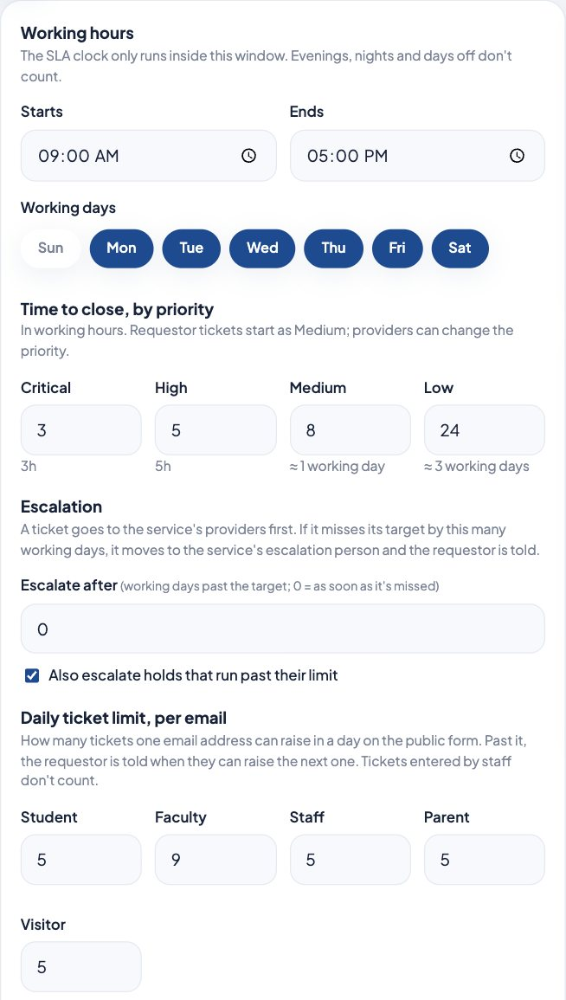
Keep an eye on things
Attention: what needs you now
Services with no provider, escalated and overdue tickets, holds past their limit, and emails that failed to send (with Resend). On a good day this page is empty.
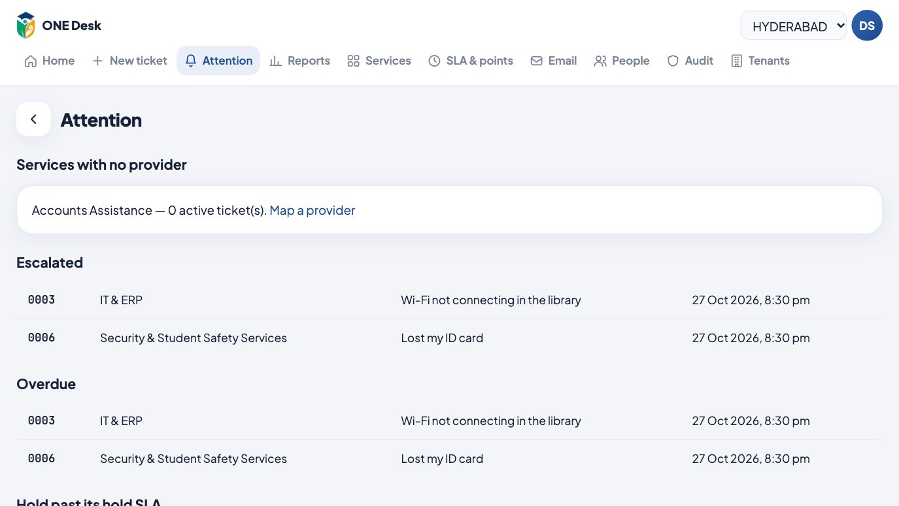
Reports
Pick the last 7, 30, 90 or 365 days, or Custom dates: choose From and To, then Show. You get tickets raised and closed, average time to close, the on-time score, tickets per day, by priority and by age, a per-service table and the provider leaderboard.
Export CSV on Home downloads the ticket list.
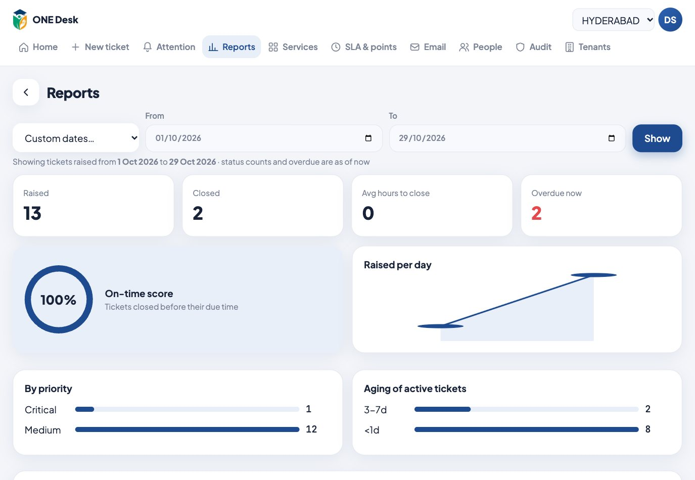
Emails
Connection
Emails are sent from Digital Services through Power Automate. This tab shows if it's Connected, with counts of sent and failed emails.
Paste the Flow URL and Secret key from your flow, set the Public address to https://stmarys-desk.supercxo.ai (used in email buttons), tick Send emails, and save. Use Send a test email after any change.
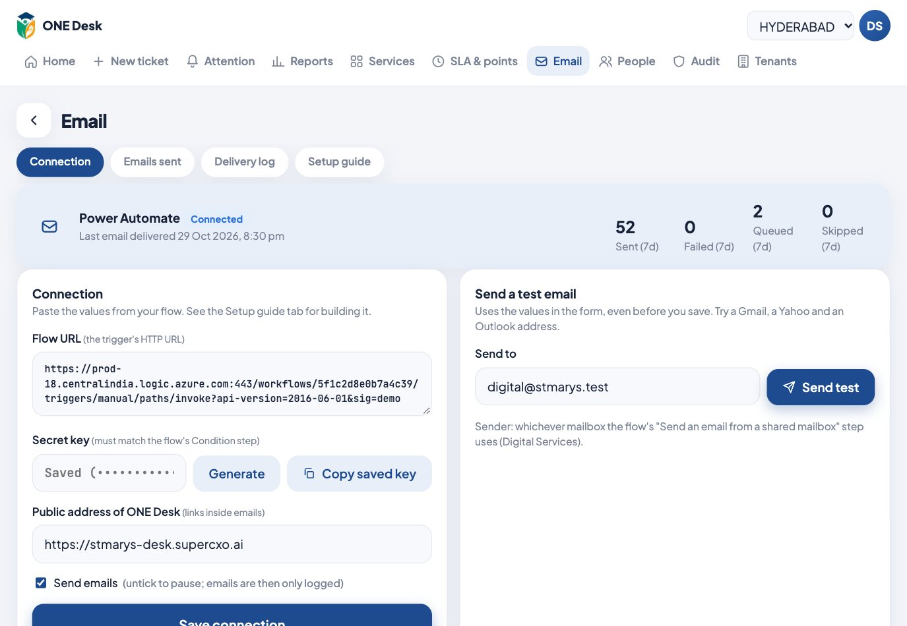
Which steps send email
Every step that sends an email is listed with who receives it, including New staff account (the welcome email) and Password changed. Switch one off to stop it; it's then logged as skipped. Preview shows the real email.
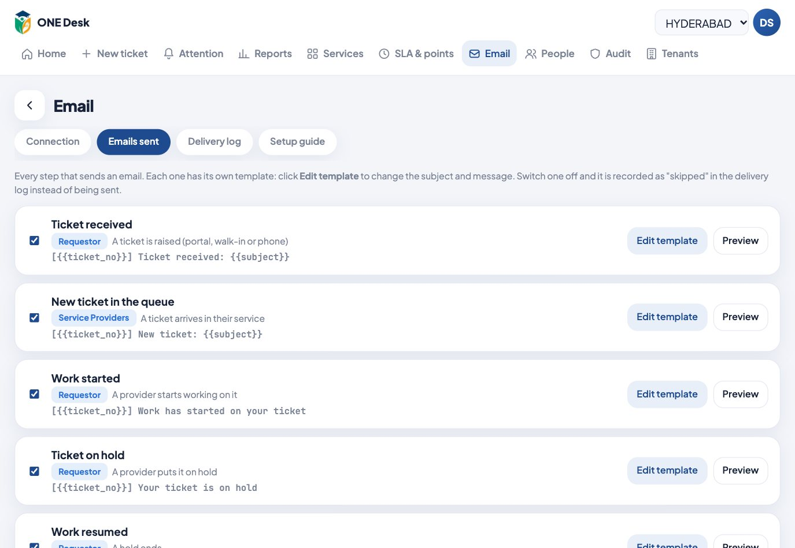
Change the wording
Click Edit template. Click the chips to insert details like {{staff_name}} or {{ticket_no}}. The green chips add designed sections: progress tracker, ticket details, latest updates and the guide link. The preview updates as you type. Reset to default brings back the original.
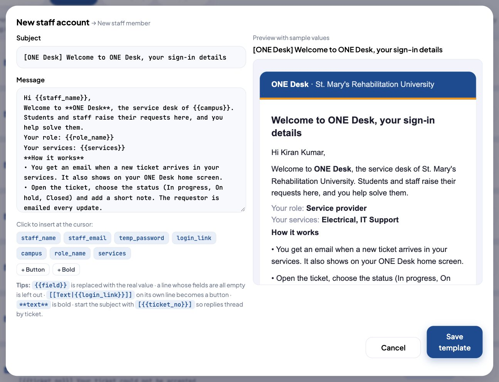
https://stmarys-desk.supercxo.ai/#/d/smru…/#/d/smru?service=MAINT